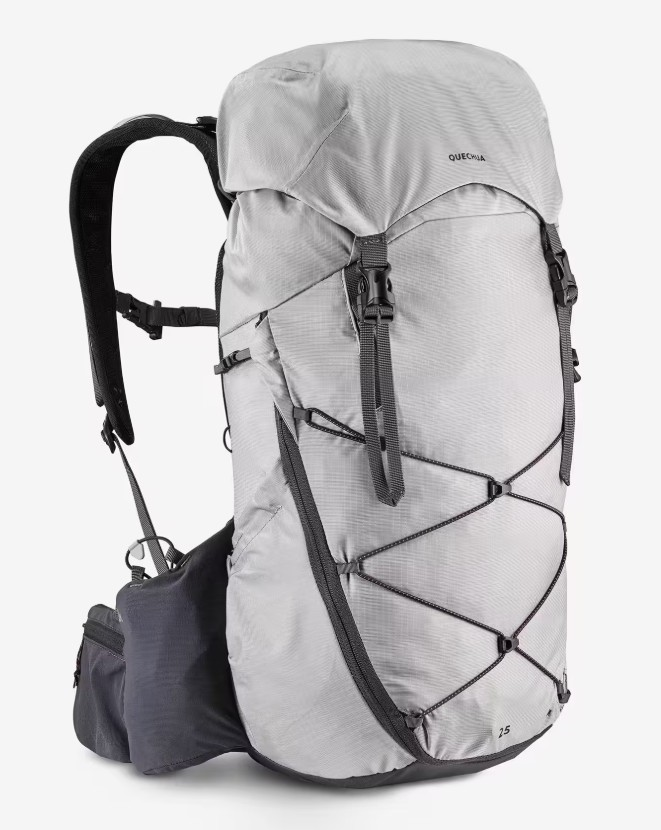

Dernière randonnée

Canyon du Diable
- Distance : 7,04 km
- Dénivelé + : 263 m
- Dénivelé - : 268 m
- Durée : 2h
"
width="100%"
height="350"
loading="lazy"
style="border:0;">
Dernières randonnées
Rando 1
Rando 2
Rando 3
Rando 4
Rando 5
Mon sac
